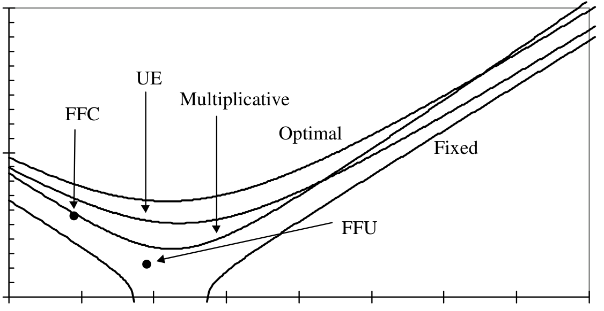
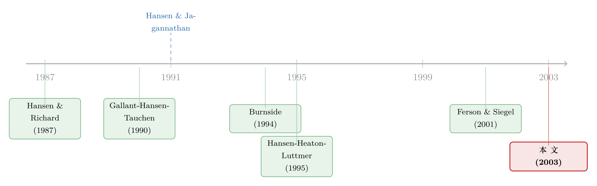

给资产定价模型测谎的那把尺，自己先量歪了
本文读的是 Ferson & Siegel (2003, Review of Financial Studies)：Hansen–Jagannathan 方差下界本是用来「测谎」资产定价模型的工具，可一旦把条件信息塞进去，这把尺在有限样本里会系统性地偏大，于是好端端的模型被「冤判」太多次。作者把这个偏差的大小算清楚，并给出一个简单、好用、且对数据生成过程稳健的偏差修正。
1 一把用来「测谎」的尺子
先从一个很朴素的问题讲起。资产定价理论说到底，都能写成同一个样子：存在一个随机变量 \(m\)——随机贴现因子 (stochastic discount factor, SDF)——使得任何资产的「贴现后」价格等于它的成本。用公式写，就是那条所有资产定价模型都绕不开的基本估值方程：
$$ E\!\left[\,m\,R_t \mid Z_{t-1}\,\right] = e $$
这里 \(R_t\) 是资产的总收益（1 加上收益率）向量，\(e\) 是一列全是 1 的向量，\(Z_{t-1}\) 是 \(t-1\) 时刻公开信息集里的工具变量。不同的理论，无非是给 \(m\) 写出不同的具体形式：消费 CAPM 把 \(m\) 写成边际效用之比，习惯形成模型再加一层，诸如此类。
问题来了：理论家手里有一堆候选的 \(m\)，怎么知道哪一个至少有资格满足上面这条方程？Hansen and Jagannathan (1991)（下称 HJ）给了一个极漂亮的答案。他们证明，任何能给定资产定价的 \(m\)，它的方差都不能太小——存在一个下界。这个下界只用收益的均值和协方差就能算出来：
$$ \sigma^2_m = \left(e - E[m]\,\mu\right)' \Sigma^{-1} \left(e - E[m]\,\mu\right) $$
其中 \(\mu = E[R]\)，\(\Sigma\) 是收益的协方差矩阵。换句话说，HJ 边界把「资产价格数据」翻译成了一句对 SDF 的硬约束：你的 \(m\) 波动得太小，就一定无法给这些资产定价。于是它成了一台「测谎仪」——拿一个候选模型来，先看看它落不落在边界之内，落在外面的当场出局。
HJ 边界和夏普比率 (Sharpe ratio) 是一枚硬币的两面：下界恰好等于资产能达到的最大平方夏普比率乘以 \((E[m])^2\)。资产组合越「会赚」，对 SDF 波动的要求就越苛刻。
2 把「条件信息」请进来，尺子更狠了
接着，一个自然的问题是：上面这套只用了无条件的均值方差，可现实中投资者明明会看利率、看股息率这些滞后变量来调整预期。如果把这些条件信息也用上，测谎仪是不是能更灵敏？
答案是肯定的。直觉很简单：条件信息意味着 \(m\) 不仅要给原始资产定价，还要给一切「动态交易策略」\(R_t f(Z_{t-1})\) 定价。要求满足的策略越多，能过关的 \(m\) 越少，边界就越紧。本文比较了三种把条件信息塞进去的办法，这也是全文的骨架：
- 乘法边界 (multiplicative)：HJ 自己提的标准做法，把收益乘上滞后变量 \(I \otimes Z_{t-1}\)，当成「扩展后的资产」再算一遍普通边界。
- 有效组合边界 (efficient portfolio, UE)：基于 Ferson and Siegel (2001) 推出的无条件均值方差有效组合权重，把 \(f(\cdot)\) 限制成「权重之和为 1」的组合函数。
- 最优边界 (optimal)：Gallant, Hansen, and Tauchen (1990)（下称 GHT）的「最大下界」，对所有有界可积函数 \(f(\cdot)\) 都成立——这是三者中最紧的那条。
本文给 GHT 边界补了一个便于计算的闭式表达式，无条件方差是
$$ \sigma^2_m = \left(E[m] - E\!\left[\tfrac{\beta(Z)}{1+\alpha(Z)}\right]\right)^{2}\Big/ E\!\left[\tfrac{1}{1+\alpha(Z)}\right] + E[\delta(Z)] - E\!\left[\tfrac{\beta^2(Z)}{1+\alpha(Z)}\right] - (E[m])^2 $$
（这里 \(\alpha(Z)=\mu'(Z)\Sigma^{-1}(Z)\mu(Z)\)、\(\beta(Z)=e'\Sigma^{-1}(Z)\mu(Z)\)、\(\delta(Z)=e'\Sigma^{-1}(Z)e\) 是条件有效集常数。）
到这一步，故事似乎该顺理成章地收尾了：用上条件信息，边界更紧，测谎更准，皆大欢喜。
但真正关键的一步在于——这把更狠的尺子，在有限样本里，自己先量歪了。
3 反转：尺子自己量歪了
早在没有条件信息的年代，Burnside (1994) 和 Cecchetti, Lam, and Mark (1994) 就用蒙特卡洛模拟发现：即便模型为真，样本里算出来的 SDF 也常常落在样本 HJ 边界之外。也就是说，这台测谎仪有「冤判」的毛病——它拒绝正确模型的次数，远超它该有的显著性水平。但那两篇文章都只看了 \(Z_{t-1}\) 为常数的特例。
本文要问的是：把条件信息加进去之后，这个冤判会变好还是变坏？
结论触目惊心：会变坏，而且坏得很有规律。原因藏在估计量本身。当我们用样本均值 \(\hat\mu\) 和样本协方差 \(S\) 去算边界时，得到的是
$$ \hat{\sigma}^2_m = \left(e - E[m]\,\hat\mu\right)' S^{-1} \left(e - E[m]\,\hat\mu\right) $$
在收益服从多元正态的假设下，这个二次型服从一个非中心卡方分布（它正是 Jobson and Korkie (1980) 研究过的最大平方夏普比率的分布）。沿着这条分布算下去，作者得到了这个估计量的期望（Proposition 4）：
$$ E\!\left[\hat{\sigma}^2_m\right] = \frac{n}{T-n-2}\left(E[m]\right)^2 + \frac{T}{T-n-2}\,\sigma^2_m $$
看右边第二项的系数 \(\frac{T}{T-n-2}>1\)：样本边界系统性地高估了真实下界。下界被抬高，意味着候选模型更容易被「顶」到边界之外——冤判就是这么来的。更要命的是，决定偏差大小的是资产个数 \(n\) 与时间序列长度 \(T\) 的比值 \(n/T\)。而在乘法边界里，「资产个数」要换成 \(n(L+1)\)（\(L\) 是滞后工具变量的个数）——塞进去的条件信息越多，\(n/T\) 越大，偏差被放大得越狠。
这就是全文的核心张力：你越想让测谎仪灵敏（多用条件信息），它冤判得就越厉害。
4 把歪掉的尺子掰回来
既然偏差的来源算清楚了，修正就水到渠成。把上面那条期望反解出来，就得到一个无偏估计量——这正是本文最该被记住的一个公式：
直觉上，这个调整做了两件事：先把估计值乘以一个小于 1 的收缩因子 \(1-\frac{n+2}{T}\)，再减去一个与 \(n/T\) 成比例的常数项——整体上把估计的方差往 \(-(E[m])^2\) 的方向「收缩」了 \(n/T\) 这么大一截。
那对最优边界和 UE 边界呢？它们的 \(E[m\mid Z]\) 不再是常数，处理起来更微妙。作者在条件正态的假设下，用迭代期望（先对给定 \(Z\) 求条件期望、再求无条件期望）做了一个近似，得到统一的修正式（Proposition 5）：
$$ \hat{\sigma}^2_{m^*,\text{adjusted}} = \frac{T-n-2}{T}\,\hat{\sigma}^2_{m^*} - \frac{n}{T}\left(E[m]\right)^2 + \frac{2}{T}\,\mathrm{var}\!\left[E[m\mid Z]\right] $$
这里有一个很漂亮的分解：右边第二项是纯粹的「自由度」调整，只取决于 \(n\) 和 \(T\)，总是把边界往下压；第三项 \(\frac{2}{T}\mathrm{var}[E[m\mid Z]]\) 则取决于条件均值 \(E[m\mid Z]\) 的波动，方向相反，而且在固定边界和乘法边界里它恰好为零（因为那里 \(E[m\mid Z]\) 是常数）。作者发现，对 UE 和最优边界，这第三项小到可以忽略——贡献不到总修正量的 0.2%。换言之，绝大部分修正就是那个自由度项，而它在乘法边界里因为 \(n\) 被换成了 \(n(L+1)\)，所以修正幅度也最大。
把这套修正应用到各条边界上的效果，论文用一张图集中呈现：

Figure 2: applies our finite sample bias adjustments to the various bounds
最后，作者还顺手检验了 Hansen, Heaton, and Luttmer (1995) 推出的那套渐近标准误在有限样本里准不准——结论是表现良好，只是「轻微」低估了经验标准差。也就是说，一旦把偏差修正和标准误一起用上，这台测谎仪才算被校准好。校准之后还有个耐人寻味的发现：不用任何条件信息的边界，在考虑了抽样误差之后，几乎只能把 SDF 方差约束为正——基本没什么经济含量；而有效地用上条件信息的边界，才真正能把一些有意思的 SDF 模型排除掉。
5 文献脉络
这条线索的源头，是把「资产价格数据」直接翻译成「对边际效用波动的约束」这个想法。Hansen and Richard (1987) 先厘清了条件信息在动态资产定价检验中扮演的角色；随后 Gallant, Hansen, and Tauchen (1990) 给出了用条件矩推断 SDF 波动的最优下界。真正让这套工具家喻户晓的是 Hansen and Jagannathan (1991)——他们的方差下界成了资产定价的标准诊断器。
接着，一批人开始拷问这台诊断器在有限样本里到底准不准：Burnside (1994) 和 Cecchetti, Lam, and Mark (1994) 用模拟揭示了「冤判」现象，但都局限在无条件的情形。另一边，Hansen, Heaton, and Luttmer (1995) 补上了边界的渐近标准误，Bekaert and Liu (1999) 则讨论了乘法框架下如何逼近 GHT 最优边界、以及条件矩设定错误时边界会失效。而本文的直接前身，是作者自己的 Ferson and Siegel (2001)——那篇推出了无条件有效组合的闭式权重，正是 UE 边界的基石。

Ferson and Siegel (2003) 站在这两条线的交汇处：它第一次系统比较了三种条件信息边界的有限样本性质，把那个被忽视的、随条件信息放大的上偏差量化出来，并给出可直接套用的修正。（关于把条件信息和方差下界用在定价核诊断上的延伸，可参见《定价核的「测谎仪」，为什么要请进期权？》；关于股权溢价与 SDF 之间的张力，亦可参见《searching-for-the-equity-premium》。）
6 评论与延伸（Q&A + 研究方向）
(a) 几个可能的疑问
Q：HJ 边界的「偏差」到底是估计偏差，还是模型设定偏差？
是纯粹的有限样本估计偏差。即便模型完全正确、矩设定也对，仅仅因为用样本矩替代总体矩、且二次型 \(\hat\sigma^2_m\) 服从非中心卡方分布，期望就被抬高了 \(\frac{T}{T-n-2}\) 倍。它与「模型设定错误」是两回事——后者会让边界本身失效（Bekaert and Liu 1999 强调的那种），不是本文修正能解决的。
Q：为什么加条件信息反而让偏差更严重，这不反直觉吗？
关键在「自由度」。条件信息要么把资产数从 \(n\) 扩成乘法框架下的 \(n(L+1)\)，要么让最优化挖掘更多维度——本质上都是在用更多参数去拟合同样长的样本。\(n/T\) 一变大，偏差就被放大。越想灵敏，越容易过拟合，这其实并不反直觉。
Q：三种边界里，到底该用哪一种？
论文没有给出唯一答案，而是指出权衡。最优（GHT）边界最紧，但在条件矩设定错误时会失效；UE 边界虽不是最紧的，却有两重稳健性——它在条件矩设错时仍是合法（虽不有效）的边界，且其组合权重「保守」、不会在极端条件矩下取极端头寸，因此对离群值更稳健。
Q：那个 \(\frac{2}{T}\mathrm{var}[E(m\mid Z)]\) 项既然贡献不到 0.2%，为何还要写进公式？
因为它是把固定/乘法边界与最优/UE 边界统一起来的那一项：在前者它恒为零，在后者它非零但很小。保留它，修正式才在所有边界上通用；忽略它，则修正几乎退化成纯自由度调整。它的「小」本身就是一个有价值的结论。
Q：偏差修正会不会过头，把边界压到负数、失去经济含义？
有这个风险——修正把方差往 \(-(E[m])^2\) 方向收缩。作者也正是借此说明：无条件边界在修正后「几乎只能把 SDF 方差约束为正」，经济含量很低。这恰恰反衬出有效使用条件信息的边界才有真正的甄别力，而不是修正本身有问题。
Q：正态假设是硬伤吗？收益明明有肥尾。
偏差修正的精确推导确实依赖（条件）正态。但作者用第 6 节专门检验了「改变数据生成过程」的影响，结论是偏差与修正的有用性对数据生成过程的合理变化是稳健的。这说明正态更多是推导的脚手架，而非结论成立的必要条件。
(b) 几个可能的研究问题与提案
-
把这套偏差修正搬到公司债 SDF 诊断上。 【经济故事】公司债收益有强烈的条件可预测性（信用利差、流动性），正是「条件信息边界」最该发力的地方；但公司债横截面 \(n\) 大、有效样本 \(T\) 短，\(n/T\) 偏差会异常严重。不修正，可能系统性地误判信用风险模型。 【可行性】高。数据用 TRACE + 主流信用因子即可，识别上直接套用本文 Proposition 4–5 的修正，难点只在公司债条件矩的设定。
-
外资持有人结构作为条件变量，能否收紧国际 SDF 边界？ 【经济故事】跨境资金流与外资持有比例对新兴市场收益有预测力。若把它当作 \(Z\)，理论上能让国际资产定价模型的测谎更灵敏；但工具维度一高，偏差也随之放大，正好检验修正的价值。 【可行性】中。持有人数据（如 EPFR、各国托管统计）可得，识别清晰；挑战在外资变量的内生性与条件矩设定是否「设错」（会触发 Bekaert-Liu 的失效问题）。
-
流动性枯竭期，HJ 边界的偏差是否被放大？ 【经济故事】危机中收益分布肥尾、协方差矩阵接近奇异，\(S^{-1}\) 极不稳定，本文的正态推导可能严重失真。一个「状态依赖」的偏差修正或许是必要的。 【可行性】中。可用 2008、2020 两段子样本做模拟对照，识别上需要把正态推导推广到肥尾/混合分布——理论工作量不小。
-
用 bootstrap/jackknife 替代解析修正，谁更稳健？ 【经济故事】本文走的是解析路线（依赖正态）。Efron (1982) 那套重抽样方法本可绕开分布假设。一个直接的对照实验：在同样的数据生成过程下，比较解析修正与重抽样修正在覆盖率上的表现。 【可行性】高。纯计算实验，数据与代码都可复现，是一篇干净的方法学对照论文。
7 我的判断
这篇文章的贡献，是把一个「大家都隐约知道、却没人量清楚」的问题做实了：HJ 边界作为测谎仪，在条件信息下会系统性冤判，而冤判的幅度由 \(n/T\)（乘法框架下是 \(n(L+1)/T\)）精确刻画，并且有一个简单到可以手算的修正。它的可贵之处在于诚实——作者明确承认乘法边界里 \(E[Z]\) 也需估计、修正忽略了这层不确定性，但用模拟验证了在现实样本量下仍然够用；也明确区分了「估计偏差」（本文能修）与「矩设定错误」（本文修不了）。
我对识别的主要担忧，全压在那个正态假设上。偏差修正的精确性来自非中心卡方分布，而真实收益——尤其是公司债和危机期的收益——肥尾且协方差近奇异，此时 \(S^{-1}\) 的行为远比正态下狂野。作者第 6 节的稳健性检验缓解了部分顾虑，但没有正面回答「设定错误 + 肥尾」叠加时修正会偏到哪里去。
后续我最想看到的，是把这把校准过的尺子真正用在信用市场上：公司债是条件可预测性最强、\(n/T\) 偏差最危险、却几乎没人做过 SDF 边界诊断的资产类别。如果修正之后，某些被「无条件边界」轻松放过的信用风险模型反而被有效边界排除掉——那才真正兑现了本文的承诺：不是让测谎仪更敏感，而是让它判得对。
参考文献
- Bekaert, G., and J. Liu (1999). Conditioning Information and Variance Bounds on Pricing Kernels. Working paper, NBER.
- Burnside, C. (1994). Hansen-Jagannathan Bounds as Classical Tests of Asset-Pricing Models. Journal of Business and Economic Statistics 12, 57–79.
- Cecchetti, S. G., P. Lam, and N. Mark (1994). Testing Volatility Restrictions on Intertemporal Marginal Rates of Substitution Implied by Euler Equations and Asset Returns. Journal of Finance 59, 123–152.
- Efron, B. (1982). The Jackknife, the Bootstrap, and Other Resampling Plans. Society for Industrial and Applied Mathematics, Philadelphia.
- Ferson, W. E., and A. F. Siegel (2001). The Efficient Use of Conditioning Information in Portfolios. Journal of Finance 56, 967–982.
- Ferson, W. E., and A. F. Siegel (2003). Stochastic Discount Factor Bounds with Conditioning Information. Review of Financial Studies 16(2), 567–595.
- Gallant, A. R., L. P. Hansen, and G. Tauchen (1990). Using Conditional Moments of Asset Payoffs to Infer the Volatility of Intertemporal Marginal Rates of Substitution. Journal of Econometrics 45, 141–179.
- Hansen, L. P., J. Heaton, and E. Luttmer (1995). Econometric Evaluation of Asset Pricing Models. Review of Financial Studies 8, 237–274.
- Hansen, L. P., and R. Jagannathan (1991). Implications of Security Market Data for Models of Dynamic Economies. Journal of Political Economy 99, 225–262.
- Hansen, L. P., and S. F. Richard (1987). The Role of Conditioning Information in Deducing Testable Restrictions Implied by Dynamic Asset Pricing Models. Econometrica 55, 587–613.
- Jobson, J. D., and B. M. Korkie (1980). Estimation for Markowitz Efficient Portfolios. Journal of the American Statistical Association 75, 544–554.
- Lucas, R. E., Jr. (1978). Asset Prices in an Exchange Economy. Econometrica 46, 1429–1445.
- Shiller, R. J. (1982). Consumption, Asset Markets and Macroeconomic Fluctuations. Carnegie-Rochester Series on Public Policy 17, 203–238.